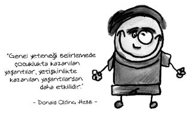

Donald Olding Hebb (1904-1985)
Kanadalı psikolog. Öğretmenlik, çiftçilik, işçilik yapan Hebb, doktorasını psikoloji üzerine yapmıştır. Beyin sarsıntılarının zekâ üzerindeki etkisi ve bireysel farklılıklar konusunda birçok araştırma yapmıştır. Nörofizyolojik kuramın en önemli temsilcisidir.
Hebb insan beyninde 100 milyar sinir hücresi (nöron) olduğunu söyler. Çocukların doğduktan sonra gördükleri her nesne, duydukları her ses, her koku için bir nöronun aktif hâle geldiğini ve sonraları bunlar arasında ilişki kurulduğunu belirtmiştir. Örneğin babası tarafından sigara içilirken kucağa alınıp öpülen bir çocuk, kucağa alınma, öpülme, sakalların batması ve sigara kokusu arasında bağlantı kurar. Daha sonraları çocuk, sigara kokusu duyunca canı acıyacakmış gibi hissetmeye başlayabilir.
Hebb, genel yeteneği belirlemede çocuklukta kazanılan yaşantıların daha etkili olduğunu vurgular. Bu nedenle, çocukluktaki beyin hasarları zekâ gelişimini engelleyebilir. Ancak, aynı beyin hasarları, yetişkinlikte olduğunda genel yeteneği olumsuz etkileyemez.
Hebb’in ulaştığı bir diğer sonuç, genel yeteneğin kalıtımla belirlenmediği, yaşantı ürünü olduğudur. Hebb, beyin gelişiminde en önemli şeyin çevreden alınan uyaranlar olduğunu söylemiştir. İki grup fare alıp bunlardan birini evinde kızlarına büyüttürdüğünde evde yani zengin çevrede yetişenlerin diğer asosyal(!) olanlardan daha zeki olduğunu görmüştür.
